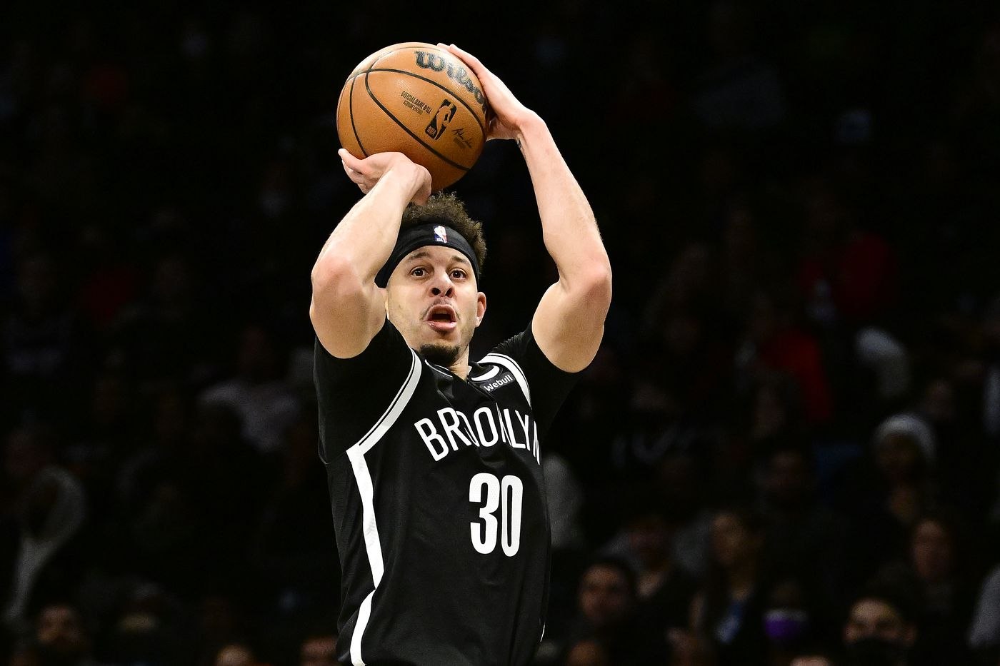

Kevin Wayne Durant es un jugador profesional de baloncesto estadounidense que pertenece a la plantilla de los Brooklyn Nets de la NBA. Con 2,08 metros de altura, juega en la posición de alero.
Kirie Irving
Kyrie Andrew Irving es un jugador de baloncesto estadounidense que pertenece a la plantilla de Brooklyn Nets de la NBA. Con 1,88 metros de estatura, juega en la posición de base.
Ben Simon
Benjamin David "Ben" Simmons es un jugador de baloncesto australiano que forma parte de la plantilla de los Brooklyn Nets de la NBA. Con 2,08 metros de estatura juega en la posición de base.
Yuta Watanabe
Yuta Watanabe es un baloncestista japonés que pertenece a la plantilla de los Brooklyn Nets de la NBA. Con 2,06 metros de estatura, juega en la posición de ala-pívot.
Joe Harris
Joe Malcolm Harris es un jugador de baloncesto estadounidense que pertenece a la plantilla de los Brooklyn Nets. Completó su periplo universitario durante cuatro años jugando en los Virginia Cavaliers.

Sert Curry
Seth Adham Curry es un jugador de baloncesto estadounidense que pertenece a la plantilla de los Brooklyn Nets de la NBA. Con 1,88 metros de altura, puede actuar como base o escolta.